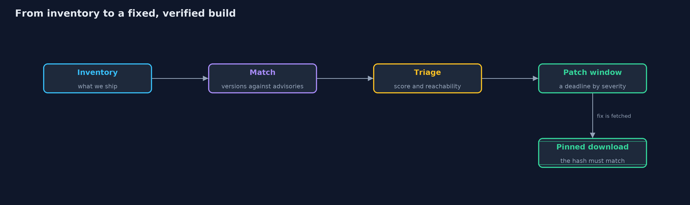
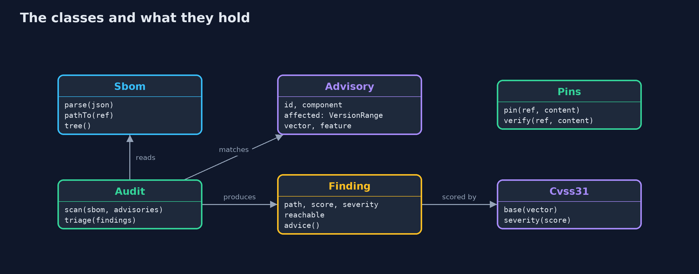
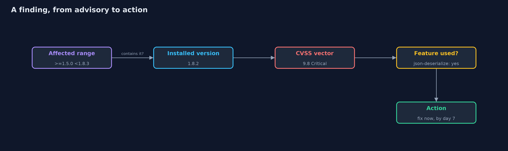
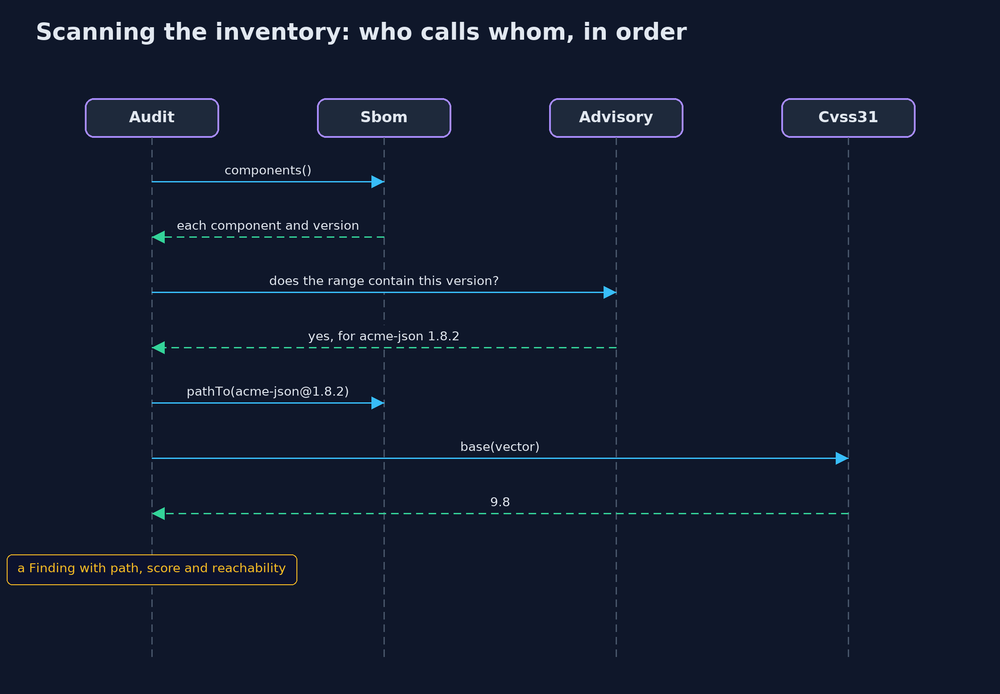

Patching and Dependency Hygiene
src/main/java/com/jk/explore/security/patching/
├── Advisory.java One known problem in one library
├── Audit.java Matches an inventory against the advisories
├── Component.java One entry of the inventory: a name, a version, and the references of the components it depends on
├── Cvss31.java The base score of the Common Vulnerability Scoring System, version 3.1, worked out from a vector such as AV:N/AC:L/PR:N/UI:N/S:U/C:H/I:H/A:H
├── Finding.java A known problem found in this program's inventory: which advisory, which component, how it got there, how bad it is, and whether the program reaches it
├── Json.java A small JSON reader for objects, arrays, strings, numbers, booleans and null: enough for the demo's inventory and advisory files
├── PatchWindow.java How long a fix may take, by severity, and how a finding stands against that deadline
├── PatchingDemo.java Runs the online store story in five numbered acts and prints exact, repeatable results
├── Pins.java A lock file in memory: the SHA-256 of each reviewed artifact, by name and version
├── Sbom.java A software bill of materials: the list of every component a program is built from, and which depends on which
├── SemVer.java A version of the form major.minor.patch, compared as numbers: 1.10.0 is newer than 1.9.0
├── Typosquat.java Spots a package name that is one edit away from a known one, the trick of a copy published under a nearly identical name
└── VersionRange.java A range such as ">=1.5.0 <1.8.3": space-separated comparators that must all hold
Most of a modern program is other people's libraries, so safety means knowing what you ship, matching it against known problems, fixing what matters first, and checking that what you download is what you reviewed.
Almost none of a modern program is code the team wrote. It is built from libraries, and those libraries are built from other libraries, called transitive dependencies. When a flaw is found in any of them, the store has the flaw too, whether or not anyone on the team has heard of that library. Good habits answer five questions in order. What do we ship? A software bill of materials, or SBOM, lists every component and its version. Which of them have known problems? Versions are compared as numbers and matched against an advisory list. How bad is each problem, and does it matter here? A CVSS score measures the flaw in general, and reachability asks whether this program uses the flawed feature. How fast do we fix it? A patch window gives each severity a deadline. Is what we download what we reviewed? A pin records the SHA-256 of each artifact, so a changed file is refused.
The demo runs all five on a small invented inventory with fictional problems, using only the JDK.
The idea in everyday terms
Think of a restaurant. A dish is made of ingredients, which come from suppliers, who bought them from farms. When a supplier announces a recall, the kitchen needs the list of every ingredient in every dish, and an answer to "do we have that batch, and do we serve the dish that uses it?". It fixes the dangerous dishes first, sets a deadline for the rest, and checks the seal on each delivery, because a recall notice is useless if the box was swapped at the door.
The scenario
An online store depends on three libraries directly, and through them on three more. The demo lists the inventory, matches it against five fictional advisories, scores and ranks the three that apply, checks them against deadlines on day forty of a simulated clock, and then pins and verifies the artifacts that the fixes would download.
Run
./gradlew run
The demo tells the story in 5 acts, each printing exact numbers that the tests check:
| Act | What it shows |
|---|---|
| 1. An inventory of what the store ships | A bill of materials lists 7 components, the store and 6 libraries; 3 are direct choices and 3 arrive as dependencies of dependencies. |
| 2. Matching the inventory against known problems | Versions are compared as numbers, so 1.10.0 is newer than 1.9.0; 3 of 5 fictional advisories apply, two through transitive libraries, and the fixed versions are not flagged. |
| 3. How bad, and what to fix first | The CVSS equation scores the three problems 9.8, 7.5 and 6.1; reachability puts the critical one and the medium one ahead of the high one that the store cannot reach. |
| 4. Patch windows | On day 40 of a simulated clock, the critical fix was made in 5 days within its 7, the medium one has 62 days left, and the high one is 10 days past its 30-day deadline. |
| 5. Pinning, and checking what you download | Three reviewed artifacts are pinned by SHA-256; the same file verifies, a single changed bit or an unreviewed version is refused, and a name one letter from a real one is flagged. |
Test
./gradlew test
37 tests in AuditTest, CvssTest, DemoRunsTest, JsonTest, PatchWindowAndPinsTest, VersionTest. The CVSS equation is checked against published scores (nine point eight, ten, seven point eight, five point three, six point one, seven point five) and SHA-256 against the published values for an empty input and for the text abc. The inventory, the advisories and the clock are fixed, so the golden output is the same on every run.
What the simulation got right, and what it left out
The inventory and the advisories are two small JSON files read with a reader written for the demo, so nothing touches the network. Every library name and advisory id is fictional. The CVSS equation is checked against published scores, the SHA-256 against the published test values, and the clock is a simulated count of days, so the output is the same on every run.
Technologies and versions
Every version below is pinned in the project's build files and was the latest stable release when the project was built.
| Technology | Version | Used for |
|---|---|---|
| Java | 25 | the language and runtime; a Gradle toolchain finds or downloads the JDK |
| Gradle | 9.8.1 (wrapper) | build and run; nothing to install, the wrapper downloads it |
| org.junit.jupiter:junit-jupiter | 6.1.3, set by junit-bom | JUnit 5: the tests (tests only) |
| org.junit.platform:junit-platform-launcher | 6.1.3, set by junit-bom | JUnit platform launcher, which Gradle needs to run the tests (tests only) |
| videokit | repository tool (tools/videokit) |
the narrated video and animation: Piper en_US-amy-medium, speed 0.8, longer pauses (the amy-slow voice) |
Learning Material
| Document | What it is for |
|---|---|
| Problem statement | the situation and what the project must show |
| Prerequisites | what you need to know first |
| Patching and Dependency Hygiene, explained | the acts in prose |
| Session guide | a one-hour lesson with exercises |
| Animated walkthrough | the acts step by step, narrated |
| Threat model | what is protected, who could harm it, and how, using STRIDE |
| Spec | what this project must be true of |
| Expected output | the golden demo output every test and every port checks against |
The idea in one picture
Each step answers one question: what do we ship, what is wrong, what first, by when, and is it the same file.

Where each piece sits
Audit joins an Sbom to Advisory entries and produces Finding values; PatchWindow and Pins act on the results.

How the data moves
The affected range decides whether it applies, the vector gives the score, the feature decides reachability.

Who calls whom, in order

Video
video/patching-and-dependency-hygiene-explained.mp4 (with .m4a audio and .srt subtitles) is built by video/build_video.sh. Rendered media is not committed.
What it costs
- An advisory list only knows what has been found. A clean scan means no known problem, not no problem, and the list must be kept current.
- Scores are generic. CVSS measures the flaw in the abstract, so a Critical in a feature the store never calls can matter less than a Medium in one it calls all day.
- Reachability here is a simple model. The demo asks whether the program uses a named feature. Real tools analyse call graphs, and still make mistakes in both directions.
- Pinning costs effort on every update. Each new version needs a review of its new hash, so automation and small reviews are what keep pinning sustainable.
- Patching can break things. Upgrades need tests, which is why a deadline is set by severity and not by haste.
When this is too much
For a small tool nobody depends on, a scan before each release may be enough. For a store that handles payments, the inventory is produced by every build, the scan runs daily, the deadlines are written down, and the pins are enforced by the build.
Where you have already met this
- Dependabot, Renovate and similar bots that open pull requests for new versions.
npm audit,pip-audit, OWASP Dependency-Check and Trivy, which match an inventory against advisories.- CycloneDX and SPDX, the standard formats for a software bill of materials.
- Gradle's dependency locking and dependency verification, and
package-lock.jsonwith its integrity hashes. - News about supply chain attacks, where a trusted package was replaced or copied under a similar name.
Where this sits
This project is the second in safe-habits, after least-privilege. It uses the hashing from hashing-and-integrity to check what is downloaded.